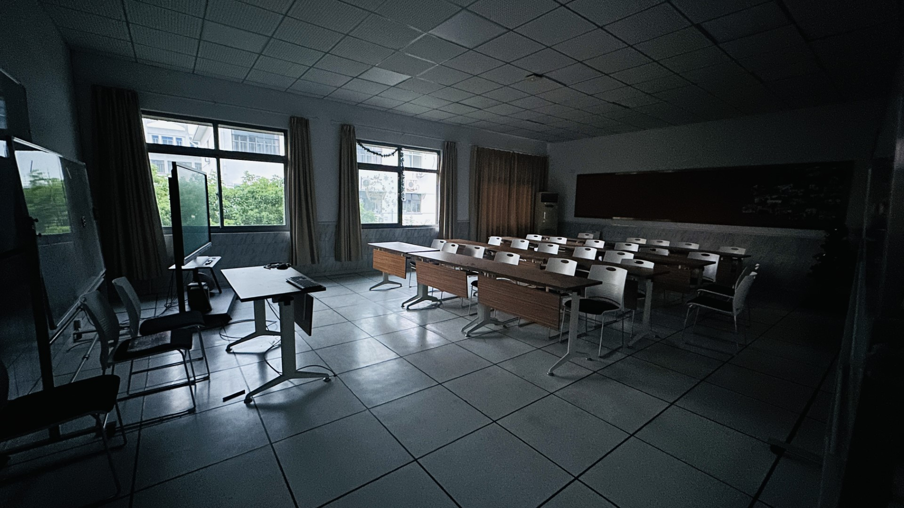

I arrived late at night the first week, left the same week, and returned the week after (in the morning), and was assigned a different yet similar room, so I was able to document the experience following the second week.
It appears that college visitors (and other guests to the college) will stay at the Academic Exchange Center (which also doubled as an "on-campus hotel"), so the International Office put me up in one of those rooms there.
In all of the rooms I stayed in, there were 2 beds, a desk, a TV, and 2 loungers. Each room had a bathroom with a shower. I could not tell if the rooms had been vacuumed, and I found dust in many locations around the room.
I took photos in room A309, the first room I was assigned to. It was at the end of the building, right next to a fire escape with a door that wouldn't close. Sometimes, I'd hear it creak open before hitting the wall (the door didn't fit). It was starting to get annoying, so I ended up switching to room A307.
There was also a B-wing, though I'd imagine the rooms looked similar.
Worth noting is that there was no fridge, so I'd bring a small cooler pack next time before buying ice from the supermarket.
Classrooms
CIT's international program was housed 2 buildings away from my location. The International Office is also located in the same place. The classes I took were located on the same floor, the 2nd floor, of the Xuedao building.
Going up the stairs to the right was the director's office, complete with 2 desks and a couch for guests.
Going down the hallway, there was a conference/exhibition room with stuffed bears (apparently promoting cooperation between CIT and multiple American universities) and posters.

To the left of the stairs were two ESL classrooms (aptly named ESL 1 and ESL 2, in the order closest to the stairs). Both classrooms are probably the same size, although ESL 1 had more desks and chairs, making it feel cozier.
Meanwhile, there were 2 mini-Christmas trees in ESL 2.
Classes
I had the opportunity to take 3 classes - 2 with Stout and 1 with Eau Claire (which I had to audit because of prior commitments), both UW schools. The 2 classes with Stout were American Folklore (ENGL) and University Success (ESL), all taught by Justin. I audited my class at Eau Claire - Languages and Intercultural Competence - so won't be spending too much time talking about this class.
Everyone taking these classes will be spending some time at these respective universities, so both instructors talked about some of the things to expect while on this side of the ocean.
American Folklore is a higher-level English class that was taught by Justin - one of my favorite professors - and was slightly modified because of the target audience such that Chinese folklore was also introduced in the class. Having never studied folklore before - with my limited understanding of both American and Chinese folklore - it was a little bit of a challenging start. I returned back to my room after class and did some online research to familiarize myself with some of the more popular folklore in Wisconsin - like Paul Bunyan and some of the Native American stories from various tribes across the state.
There were two large writing assignments in the course, but all of them were in-class activities. There were eight total classes, each of them two-and-a-half hours long, so Justin printed out packets containing all class activities. This meant that we knew what to expect, and while there was no official "homework," I would have a good idea of what to expect in the next class (and do some preparation beforehand so I could give my best work). Noteworthy is that Justin collected the packets (so we didn't need to worry about keeping them), but I thought it was a better idea to look ahead, write a few notes on what to prepare for, and prepare for the next class ahead of time.
University Success was structured much like American Folklore (seeing it was also taught by Justin), but mainly was based on college life in the U.S. and life in Menomonie. There was a short segment on the visa application for new students (I believe F1 visa), but we also spent time on what to do in Menomonie - especially in the winter. All activities done in class as well.
Classmates
I was first introduced to the student leader of the Food Science program. I believe he is responsible for communicating with his classmates and instructors as well as checking with classmates, but not sure. He shows up early to class and I often see him being the last to leave.
For the first class, I showed up about 15 minutes early. I'm someone who likes to show up early, and particularly wanted to see how things went. Justin was already there setting things up for class. I grabbed a seat in the front row, near the door. The student leader showed up a few minutes after, grabbing a seat next to me, also in the front row.
Everyone else, however, grabbed seats in the back, preferring to be less spread out in the back. There were a few that grabbed seats behind the student leader and me, and they seemed to be closer friends to him.
It appeared that "groups" had already formed before class, though the group sitting close to me immediately "adopted" me, so we did most of the classwork together.
There's always the "who is this guy that I've never seen before" at the beginning of any term. After getting to know the group sitting behind us, we got along during class. They would ask me questions about how life was like in Menomonie. In turn, they shared with me how to get around and told me what to eat from the cafeteria.
One of my new friends was a local - from the Changshu area - so he knew a lot of places around the area and recommended a place to eat, so our group went out after the summer term ended and we spent a night downtown.
I want to add that the friends I've made at CIT helped me adjust to the new environment - from providing food suggestions to helping me arrange rides downtown - that they made me feel like a part of the campus community. They will later be in the United States, and I truly hope that I can help them adjust on this side of the ocean.
Food (on campus)
There are two cafeterias and a staff cafeteria. I was provided vouchers for the staff cafeteria, though I didn't use them very often even though it was the building next door.
From the Exchange center, it was about a short 5-10 minute walk to either cafeteria (on the upper for the South cafeteria). All of them are located on the west side. I frequented both cafeterias roughly equally, although I'd order to-go more often as I had personal projects I wanted to complete back at the exchange center.
While there weren't many options available for breakfast, I completely lost track of how many options were available during other times of the day. Most noteworthy was how all options were available for less than 20 RMB (and less than 15 for most cases). I paid using WeChat Pay - they would scan your QR code - although I didn't see a tap-to-pay option available.
I also had the opportunity to get breakfast at the Staff cafeteria. Even though there were less options available, I found it convenient if I had to be quick (full disclosure: I only ate there on the last day, and it was because I had never been there before but had about-to-expire vouchers).
Finally, there were two supermarkets - both on the west side - and a fruit shop. I frequented one of the supermarkets for daily ice cream and tried probably 60-70% of the options available.
As for what was available... we'll just say that the school-provided options were impressive... and that I didn't have any trouble finding something good to eat.
More about food here - lots of options!
Though, if I returned and had to pick a place to eat, I'd probably pick from one of the noodle restaurants in the North cafeteria.
Environment
I was told that the CIT campus is a "closed campus" in that there are fences or some type of natural barrier (a lake) surrounding the campus. There were gates with controlled access and security, so I needed to scan whenever I wanted to exit or enter. They use facial recognition technology to verify IDs.
As for inside the campus, there were plenty of green spaces and a boardwalk near the lake (the lake is also a barrier separating the campus and UWC (on the other side of the lake).
There's a library in the middle of the campus, with another lake surrounding it.
I spent some time working outside, near the lake on the boardwalk, since I liked spending time outside.
CIT Staff
Two staff members (Annabel and Cathy) of the International Office greeted me at the Exchange Center. Apparently, they had already completed most of the check-in paperwork and got my room key. They were also, apparently, assigned to the task of making sure international guests (including the instructors from elsewhere) had everything necessary for success.
Cathy would often check with me to ensure I had everything I needed and to assist with paperwork (including the registration procedure for entering/exiting the campus). I should also mention that Cathy was the person I talked to most from the office. During times that I left campus (often going out for a night with new friends), she made sure that I always returned to campus safely and responded quickly to messages even late at night.
I also often saw Lily, a deputy director at the office, who is also responsible for ensuring international guests had everything necessary for a successful visit at CIT. I often saw her at the global office working on paperwork, and I was told she often works late to make sure everything is ready (especially leading up to a major signing ceremony). Lily also checked with me whenever I went to the CIT office.
Both Lily and Cathy helped me adjust to the new environment, from helping with paperwork to helping me get comfortably settled in my classes and new environment, and I will be thankful for their help and dedication.
Leo is another deputy director who is also working on the paperwork and helping with operations. I did not see much of him, although it looked like he was mostly communicating with others from other colleges.
Jing Jing is the office director, and I had the opportunity to meet her. On the day that Chancellor Frank (from UW-Stout) visited, it looked like they had a conversation in the International Office to discuss the future of the partnership between Stout and CIT.
On the night I arrived at CIT, I met President Jiang (President of CIT), who apparently spent many nights on campus (in the same building I stayed at). He seems to have a lot of things he needs to deal with as president and apparently often works late. This is a level of dedication I've never seen, and I took note of how even the highest-ranking administrative staff has a high level of involvement at CIT.
The most important takeaway I had was how the entire CIT staff, from the international office all the way up to the highest levels of administration, were so dedicated to their work and to CIT. Their effort is what keeps CIT running and makes sure everyone at CIT gets the best education possible. From working late nights to staying on campus, they are a huge part of making CIT a better place every day.
I will always remember the kindness and the hospitality shown by the CIT staff. They are a huge part of how I had a great time at CIT, and I will always remember their dedication to the university. I am thankful for them, and I am glad I had the opportunity to spend time with them.
Parting Thoughts
At the beginning of the month, it was easy for me to decide, then and there, that the experience isn't my cup of tea. From not knowing anyone there, to being in a place thousands of miles across a vast ocean, away from home, I could've easily decided to call it good and leave. I don't think I need to say that I was nervous in the weeks leading to my experience at CIT, nor do I need to mention that I was nervous when I arrived.
Today, I can say with certainty that I had an incredible experience at CIT. There were so many new experiences that I had at CIT, including the cafeteria experience and the classes. I enjoyed the environment (especially being near a lake) and had a great time.
No one ever said that adjusting to a new environment would be easy. What made this an incredible experience, though, was the entire CIT staff. They (especially Cathy and Lily) helped me adjust to the new environment and made me feel welcome and a part of the campus community. My first interactions with them set the tone for an awesome time at CIT, and they made the entire experience something I will remember.
To anyone ever considering going to CIT, or another (perhaps strange) place thousands of miles across vast oceans, or anywhere away from your comfort zone. It's easy to get dropped off away from home and decide, then and there, that the experience isn't for you. I'll agree that adjusting to the new environment can be challenging. Most importantly, I want to share that even though it may not be your cup of tea, it will always be an eye-opening experience that will help you better understand the world around you.
Thank you, CIT students and staff. It's been a blast.


 Finally, there were two supermarkets - both on the west side - and a fruit shop. I frequented one of the supermarkets for daily ice cream and tried probably 60-70% of the options available.
Finally, there were two supermarkets - both on the west side - and a fruit shop. I frequented one of the supermarkets for daily ice cream and tried probably 60-70% of the options available.